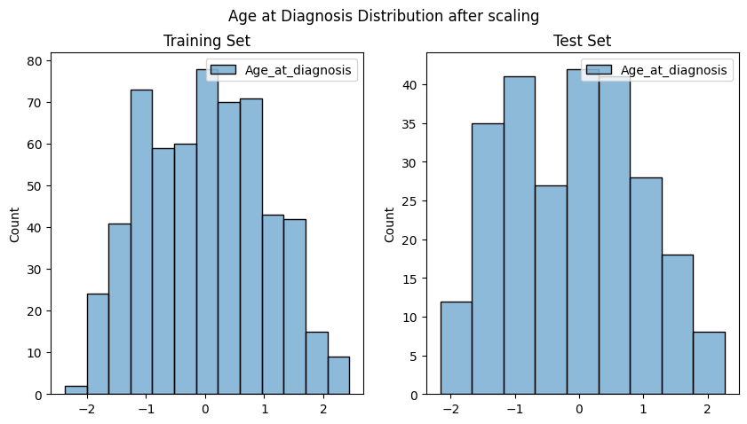

Complete Machine Learning Workflow
Machine Learning Workflow
Instructor note
Participants were given 60 minutes to
go through the Jupter notebook and
select correct answers for the questions
Instructor narrate the answers and reasoning after the self-study time
time: 45 minutes
Data exploration
Questions
Question 1:
When dealing with gene mutation features where >95% of samples are wild-type (0), what is the most important consideration?
A) Apply standard scaling (z-score normalization) to make features comparable
B) Use log transformation to reduce skewness in the distribution
C) Consider the impact on model training - rare events may be difficult to learn
D) Convert to categorical variables using one-hot encoding
Question 2:
Your dataset contains age (continuous, 20-80 range), gender (binary 0/1), and gene mutations (binary 0/1). What normalization strategy is most appropriate?
A) Apply Min-Max scaling to all features to get 0-1 range
B) Apply Z-score normalization to all features for zero mean, unit variance
C) Scale only the continuous features (age), leave binary features unchanged
D) Apply log transformation to all features to handle skewness
Question 3:
Why is feature scaling for Age_at_diagnosis is required?
A) To convert the
Age_at_diagnosisdistribution into a perfect Gaussian (normal) distribution.B) To reduce the number of unique values in
Age_at_diagnosis, thereby simplifying the model.C) To ensure that
Age_at_diagnosisvalues are transformed to be either 0 or 1, matching the gene features.D) To prevent
Age_at_diagnosisfrom disproportionately influencing the model’s parameter estimation due to its larger numerical range compared to the binary (0/1) features.
Question 4:
In this glioma classification dataset, what should be your primary concern regarding the rare gene mutations?
A) The computational cost will be too high with so many zero values
B) Rare mutations might be the most clinically important but hardest to detect
C) Binary features don’t need any preprocessing in machine learning
D) The dataset is too small and needs data augmentation
Question 5:
You’re analyzing a dataset with 10,000 patients where a particular gene mutation occurs in only 50 patients (0.5% prevalence). When should you be most concerned about this feature imbalance?
A) Always - any feature with <5% prevalence will bias the logistic regression model
B) Never - logistic regression inherently handles sparse features well
C) Only when the 50 mutation carriers don’t provide sufficient statistical power to reliably estimate the gene’s effect
D) Only when the mutation is randomly distributed and not associated with the outcome
Question 6:
In disease genomics, why might completely removing very rare genetic variants (occurring in <1% of samples) be problematic from a biological perspective?
A) Rare variants always have larger effect sizes than common variants
B) Some rare variants may be clinically actionable, even if statistically underpowered in current sample
C) Removing sparse features will always improve model generalization
D) Feature selection should only be based on statistical criteria, not biological knowledge
Missing data handling
Questions
Question 1:
Your target variable (Grade) has missing values in 0.119% of samples. What is the most appropriate approach?
A) Impute the missing grades using the mode (most frequent class)
B) Use a sophisticated imputation method like KNN to predict missing grades
C) Remove these samples entirely from both training and testing datasets
D) Replace missing grades with a third category “Unknown” and make it a 3-class problem
Question 2:
threshold = int(0.95 * len(gliomas))
# Keep columns with at least 95% non-missing values
gliomas.dropna(thresh=threshold, axis=1, inplace=True)
A) This code drops columns that have more than 5% missing values using a 95% completeness threshold (Drop ATRX_xNA - 25% missing and IDH1_xNA - 80% missing, while Keeping All other features (0.119% or 0% missing)
B) Only Drop IDH1_xNA
C) Drop all columns with missing values
D) Keep columns with 0% missing values
Question 3:
When should this column-dropping step be performed in your ML pipeline?
A) Before removing samples (rows) with missing target variables
B) After removing samples with missing target variables but before train/test split
C) After train/test split but before feature scaling
D) After model training to remove unimportant features
Train-test and Standerdisation
Questions
X_train, X_test, y_train, y_test = train_test_split(
gliomas.drop("Grade", axis=1),
gliomas["Grade"],
test_size=0.3,
random_state=42,
stratify=gliomas["Grade"],
)
scaler = StandardScaler()
X_train['Age_at_diagnosis'] = scaler.fit_transform(X_train[['Age_at_diagnosis']])
X_test['Age_at_diagnosis'] = scaler.transform(X_test[['Age_at_diagnosis']])
Question 1:
Why do we use fit_transform() on training data but only transform() on test data?
A)
fit_transform()is faster thantransform()for larger datasetsB) To prevent data leakage by ensuring scaling parameters come only from training data
C)
transform()automatically applies different scaling to test data for better performanceD) It’s a coding convention but doesn’t impact model performance
Question 2:
What would happen if you calculated scaling parameters (mean and standard deviation) using the entire dataset before splitting?
A) The model would perform better due to more stable scaling parameters
B) It would create data leakage because test set statistics influence training preprocessing
C) Nothing significant - the difference in scaling parameters would be minimal
D) The model would be more generalizable to new data
Question 3:
If a new patient has age = 85 years (outside the training age range of 20-80), what should happen during prediction?
A) Reject the prediction because the age is out of range
B) Retrain the scaler including this new data point
C) Apply the same training scaler transformation, even if it results in an extreme scaled value
D) Use a different scaling method specifically for this outlier
Question 4:

What is the most important reason for a machine learning practitioner to perform such a visual check after splitting the data?
A) To ensure that no data points were lost during the train_test_split operation.
B) To confirm that the Age_at_diagnosis feature has been transformed to a normal distribution in both sets.
C) To verify that the feature distributions are reasonably similar between the training and test sets, which helps ensure that the test set provides a fair and representative evaluation of the model’s performance.
D) To decide if the Age_at_diagnosis feature should be used as the target variable instead of “Grade”.
Corss-validation
Questions
Question 1:
You split your dataset into 70% train/30% test, getting a test precison of 87% (recall 85%). What’s the main limitation of this single performance estimate?
A) precison of 87% (recall 85%) is too low for medical applications
B) The estimate could vary with different random splits of the same data
C) 30% test size is too large and wastes training data
D) precison and recall are the wrong metric for binary classification problems
Question 2:
Say that Your single test set has 252 samples (30% of 840). If you want to evaluate model performance on rare glioma subtypes that represent 5% of cases, how many samples would you have?
A) About 42 samples - sufficient for reliable performance estimation
B) About 13 samples - too few for meaningful statistical conclusions
C) About 126 samples - more than adequate for analysis
D) The number doesn’t matter if the model is well-trained
Question 3:
A hospital wants to deploy your glioma classifier but asks: “How confident are you that this precison of 87% (recall 85%) will hold for our patient population?” With only a single holdout test, what’s your most honest answer?
A) “Very confident - precison of 87% (recall 85%) are true values since we used proper train/test split”
B) “Moderately confident - the precison and recall could realistically range from 80-94% based on this single test”
C) “Cannot provide confidence bounds - need cross-validation or multiple test sets for reliability estimates”
D) “Completely confident - precison and recall doesn’t vary between hospitals”
Corss-validation: Code
Questions
Question 1:
(A)
kf = KFold(n_splits=5, shuffle=True, random_state=1111)
splits = kf.split(gliomas.drop("Grade", axis=1))
# Initialize scaler
scaler = StandardScaler()
fold = 1
lr_cv = LogisticRegression()
scaler = StandardScaler()
for train_index, val_index in splits:
...
# Initialize the Logistic Regression model with cross-validation
X_train_scaled['Age_at_diagnosis'] = scaler.fit_transform(X_train[['Age_at_diagnosis']]).flatten()
X_val_scaled['Age_at_diagnosis'] = scaler.transform(X_val[['Age_at_diagnosis']]).flatten()
# Use the SCALED data for training and prediction
lr_cv.fit(X_train_scaled, y_train) # ← Now using scaled data
predictions = lr_cv.predict(X_val_scale- D) # ← Now using scaled data
(B)
kf = KFold(n_splits=5, shuffle=True, random_state=1111)
splits = kf.split(gliomas.drop("Grade", axis=1))
# Initialize scaler
scaler = StandardScaler()
fold = 1
for train_index, val_index in splits:
...
# Initialize the Logistic Regression model with cross-validation
lr_cv = LogisticRegression()
X_train_scaled['Age_at_diagnosis'] = scaler.fit_transform(X_train[['Age_at_diagnosis']]).flatten()
X_val_scaled['Age_at_diagnosis'] = scaler.transform(X_val[['Age_at_diagnosis']]).flatten()
# Use the SCALED data for training and prediction
lr_cv.fit(X_train_scaled, y_train) # ← Now using scaled data
predictions = lr_cv.predict(X_val_scale- D) # ← Now using scaled data
In this A code-block, the same lr_cv object is used across all 5 folds. What potential issue could this create?
A) Each fold builds upon the previous fold’s learned parameters, creating data leakage
B) The model’s internal state gets reset automatically, so there’s no issue
C) Memory usage increases exponentially with each fold
D) The model converges faster in later folds due to better initialization
Question 2:
The code declares scaler = StandardScaler() before the loop and reuses it (above A & B code-blocks). What happens when you call fit_transform() on the same scaler object multiple times?
A) It accumulates statistics across all folds, causing data leakage
B) It overwrites previous statistics with new fold’s statistics - no leakage
C) It averages statistics across folds for more stable scaling
D) It causes an error because you can only fit once
Question 3:
This code uses KFold instead of StratifiedKFold. In a medical dataset where GBM (aggressive cancer) represents 40% of cases, what could go wrong?
A) Some folds might have 60% GBM while others have 20%, creating inconsistent evaluation conditions
B) The total number of samples evaluated will be different across folds
C) Cross-validation will take significantly longer to complete
D) The precision and recall calculations will become invalid
Hyperparameter tuning
Questions
Question 1:
You train a logistic regression model for glioma classification using default scikit-learn parameters and achieve 78% F1-score. After hyperparameter tuning with GridSearchCV, you achieve 85% F1-score. What does this improvement primarily demonstrate?
A) Default parameters are intentionally set to poor values to encourage tuning
B) Machine learning algorithms need parameter optimization to match specific dataset characteristics
C) Hyperparameter tuning always guarantees at least 7% improvement in any metric
D) The original 78% score was due to a coding error in the implementation
Question 2:
# original grid in the notebook
param_grid = [
# For l2 penalty
{
'penalty': ['l2'],
'C': [0.001, 0.01, 0.1, 1, 10, 100],
'solver': ['lbfgs', 'liblinear', 'newton-cg', 'sag', 'saga'],
'max_iter': [1000, 5000], # Higher iterations for sparse data
'class_weight': [None, 'balanced'] # Handle class imbalance if present
},
# For l1 penalty (best for sparse features)
{
'penalty': ['l1'],
'C': [0.0001, 0.001, 0.01, 0.1, 1, 10], # Extended lower range
'solver': ['liblinear', 'saga'],
'max_iter': [1000, 5000],
'class_weight': [None, 'balanced']
},
# For elasticnet penalty
{
'penalty': ['elasticnet'],
'l1_ratio': [0.1, 0.3, 0.5, 0.7, 0.9], # Finer granularity
'solver': ['saga'],
'C': [0.001, 0.01, 0.1, 1, 10], # Extended range
'max_iter': [1000, 5000],
'class_weight': [None, 'balanced']
}
]
# Alternative: Focused grid for very sparse genomics data
sparse_focused_grid = [
# Emphasize L1 and ElasticNet for feature selection
{
'penalty': ['l1'],
'C': [0.001, 0.01, 0.1, 1], # Focus on stronger regularization
'solver': ['liblinear'],
'max_iter': [5000]
},
{
'penalty': ['elasticnet'],
'l1_ratio': [0.5, 0.7, 0.9], # Favor L1 component
'solver': ['saga'],
'C': [0.01, 0.1, 1],
'max_iter': [5000]
}
]
The sparse_focused_grid excludes L2 regularization and only includes L1 and ElasticNet penalties. Why is this choice particularly effective for sparse genomics data?
A) L2 regularization is computationally too expensive for high-dimensional sparse data
B) L1 and ElasticNet can set coefficients to exactly zero, performing automatic feature selection on irrelevant sparse features (while addressing multicollinearity)
C) L2 regularization requires balanced features and cannot handle any level of sparsity
D) L1 and ElasticNet converge faster than L2 when most features are sparse